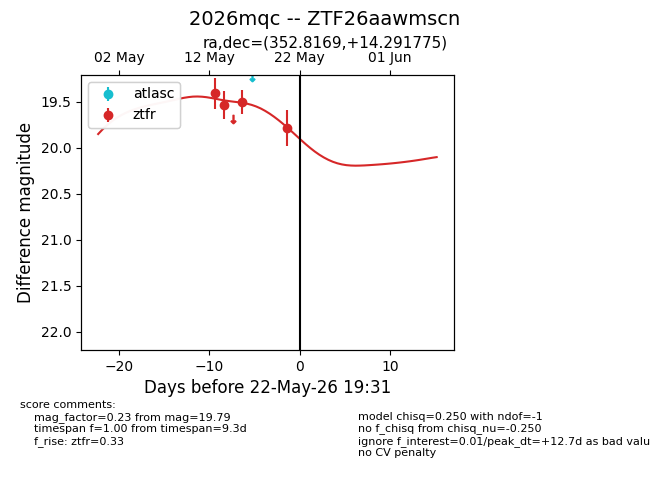
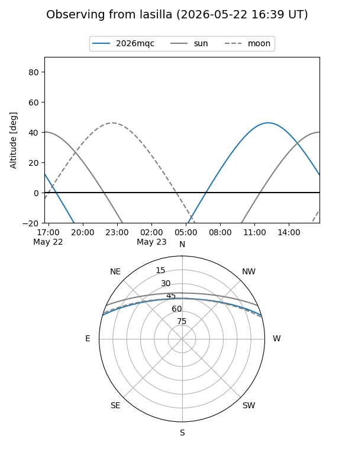
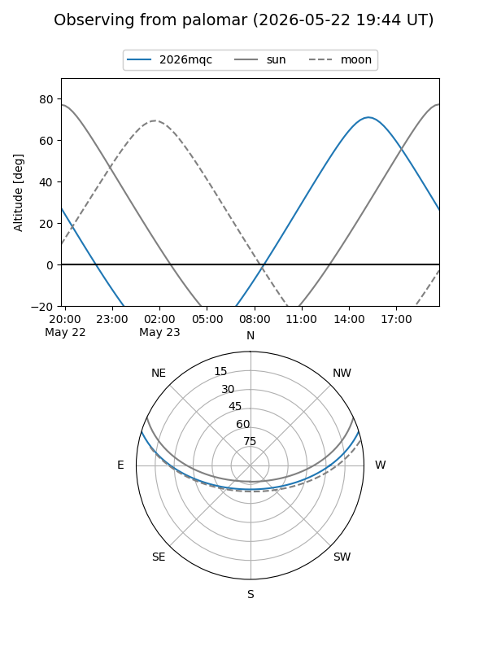
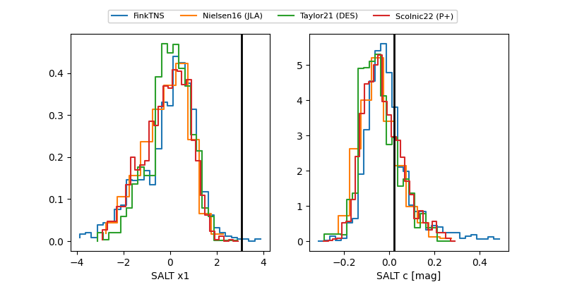

2026mqc
Target 2026mqc at 2026-05-22 19:33
Aliases and brokers:
lsst-FINK: link
lsst-Lasair: link
lsst-ALeRCE: link
ztf-FINK: link
ztf-Lasair: link
ztf-ALeRCE: link
TNS: link
YSE: link
alt names
ZTF26aawmscn (ztf,fink_ztf)
2026mqc (tns,yse)
Coordinates:
equatorial (ra, dec) = 352.8169,+14.29178
equatorial (HMS+DMS) = 23:31:16.06,+14:17:30.39
galactic (l, b) = (95.3150,-44.23866)
Flags:
Photometry:
last ztfr=19.79
4 ztfr detections
Lightcurve

Visibility


Additional plots
